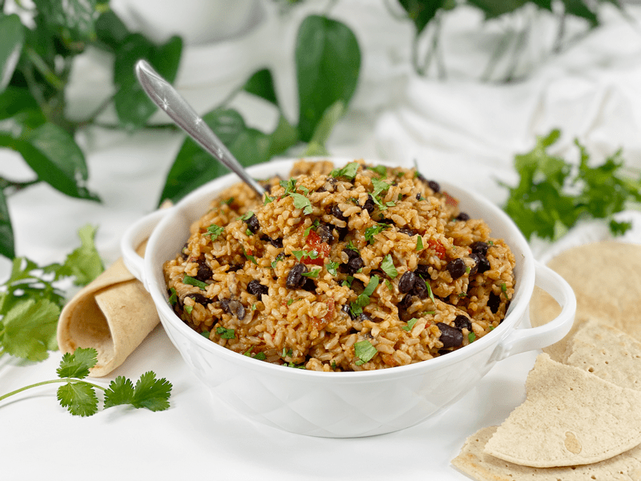
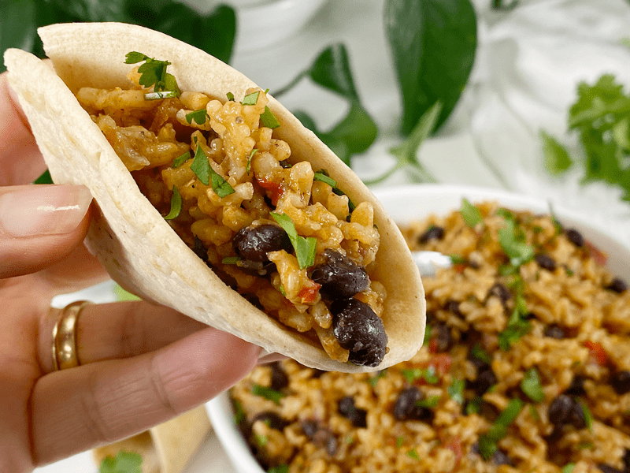
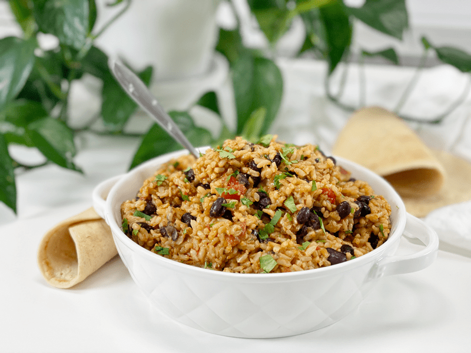

Mexican Rice with Black Beans | Instant Pot | Oil-Free
Every week I make a batch of brown rice as part of my meal prep routine. Normally, I keep it plain so I can dress it up different ways throughout the week, but today I decided that I was really hungry for Mexican rice and ready to embark upon a week’s worth of meals adding this rice dish to my plate. Today’s recipe is vegan, oil-free, easy to make, delicious, and very filling.

This recipe yields seven cups of rice goodness. Does this seem like too much for you? If so, you could cut the recipe in half, but if you like to meal prep (like me) there are many wonderful ways you can enjoy this dish throughout the week.
- Enjoy as-is, served up as a side dish.
- Use it as a wrap filling.
- Fill bell peppers with the rice and bake until the peppers are soft.
- Make a Five Layer Dip with it: Mexican rice, refried beans (cooked or raw version), vegan sour cream, shredded vegan Mexican Chili Cheese, guacamole.
- Warm the rice and add to a green salad.
- If you have any leftovers toward the end of the week, make a soup out of it by adding vegetable broth, diced tomatoes, etc. Feeling inspired yet?
Ingredient Run-Down
Long-Grain Brown Rice
- Mexican rice is typically made with white rice, but for nutritional reasons, I used brown rice. I want all that fiber, antioxidants, vitamins, and minerals that are missing from white rice.
- I also chose long-grain since it gets more fluffy and does not get sticky like short-grain brown rice.
Vegetable Broth
- I like to cook my grains and beans in vegetable broth to give more depth of flavor. If you don’t have any on hand, you can use water.
- If you are sensitive to salt, check the sodium level on the veggie broth you use. I also add 1 tsp of sea salt to the pot, so you can adjust this if need be.
Salsa
- Salsa is a quick way to add layers of flavors to the rice dish. Feel free to use or make your favorite one. They can spicy, mild, garlicky— you name it! The important thing to keep in mind is that you want to love the salsa you use. That seems like a no-brainer, but now is not the time to use up that salsa that you don’t really care for, hoping to disguise the flavors.
- If you don’t have any salsa in the pantry nor the ingredients to make your own, you can use tomato sauce in its place. The flavor will be different, but it will still be good.

Techniques to Ramp Up Nutrition
Soaking the Rice
- Soaking the rice is optional, but it’s a step that I never skip when cooking grains, beans, nuts, seeds, etc. Soaking the rice before cooking renders its nutrients more digestible by breaking down and neutralizing phytic acid, which is an anti-nutrient that prevents the absorption of calcium, zinc, and other minerals.
- To soak, rinse the rice and place it in a large bowl. Add about 4 cups of water and 2 tablespoons of raw apple cider vinegar or lemon juice. Soak overnight on the counter. When ready to use, drain and rinse the rice before adding it to the Instant Pot. Feel free to water the plants outside with the drain water.
Kombu Seaweed
- Kombu is a type of sea kelp that is high in vitamins A, C, E, B1, B2, B6, and B12.
- It has a very mild flavor, not what you would expect from a seaweed.
- It has a saltiness that comes from a balanced, chelated combination of sodium, potassium, calcium, phosphorus, magnesium, iron, and a myriad of trace minerals found in the ocean. I have a post that you can view (here) if you want to learn more.
Black Beans
- I realize that black beans aren’t typically part of Mexican rice, but I added them for two reasons.
- First and foremost — nutrition. Black beans are rich in resistant starch, which is a type of dietary fiber that is essentially resistant to digestion. Resistant starch passes through the upper digestive tract without being broken down and it is not converted into simple sugars. This may prevent blood sugar from rapidly rising and also may improve insulin sensitivity. It may help you feel fuller for a longer period of time and improve digestion overall. Check on my post (here) for more information. I am also in need of more fiber. Black beans are also rich in soluble fiber, which absorbs water, turns to a gel-like material, and passes more easily through the digestive tract than insoluble fiber.
- Secondly, they are inexpensive and help stretch the dish a bit further.
I hope you enjoy this recipe. May your days be filled with blessings. amie sue
 Ingredients
Ingredients
Yields 7 cups
- 1/2 cup diced onion
- 1/2 cup diced red bell pepper
- 2 cups long-grain brown rice, soaked
- 2 cups vegetable broth
- 1 strip kombu seaweed
- 1 tsp chili powder
- 1 tsp sea salt
- 1/2 tsp ground cumin
- 1 1/2 cups salsa
- 1 3/4 cup cooked black beans
- 1/4 cup fresh minced cilantro
- Lemon juice
Preparation
- Sauté the diced onion and red bell pepper along with a few tablespoons of water in the Instant Pot.
- Cook until the onions are translucent and the peppers are soft. If at any point things start to stick, add a little bit more water.
- Add the rice, vegetable broth, seaweed, chili powder, salt, cumin, and stir to combine.
- Add the salsa to the center of the pot on top of the rice and DO NOT STIR.
- Tomatoes can scorch easily, so we want to prevent them from sitting on the bottom or sides of the pot.
- Secure the lid, make sure the pressure valve is turned to “Sealing,” and cook on “Manual,” high pressure, for 28 minutes.
- After the machine beeps (indicating that it is done cooking) allow the pressure to naturally release before removing the lid. Make sure the pin has dropped on the lid, indicating all the pressure has been let out.
- Remove the kombu seaweed and either save for later use or mince it up and toss it back in. If you decide to save it, rinse it off and store in a sealed container in the fridge for up to 3 days.
- Add the black beans, cilantro, and with a fork fluff the rice, mixing everything together.
- If using canned beans, drain and rinse them before adding.
- Do not overstir the dish, or the rice will get mushy.
- When serving, cut a lemon in half and squirt a little over the rice. This adds a nice brightness to the dish.
- Store leftovers in the fridge for 3-5 days or freeze in portioned measurements for up to 3 months.

© AmieSue.com